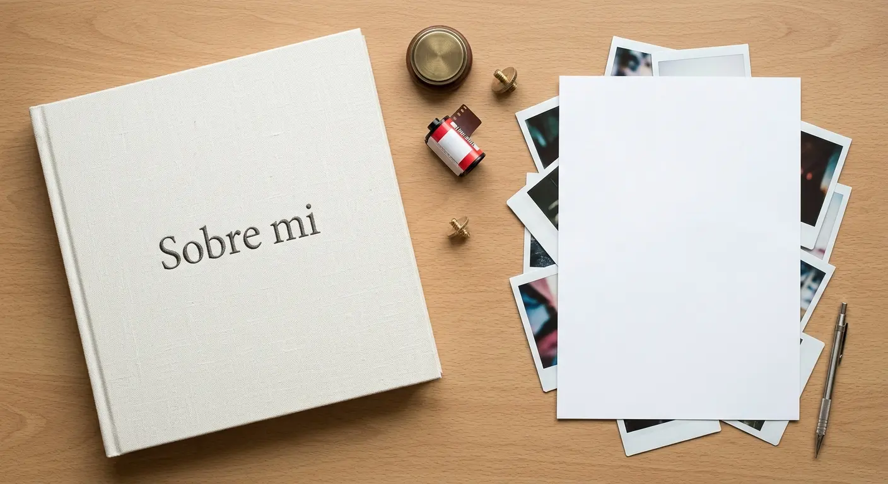
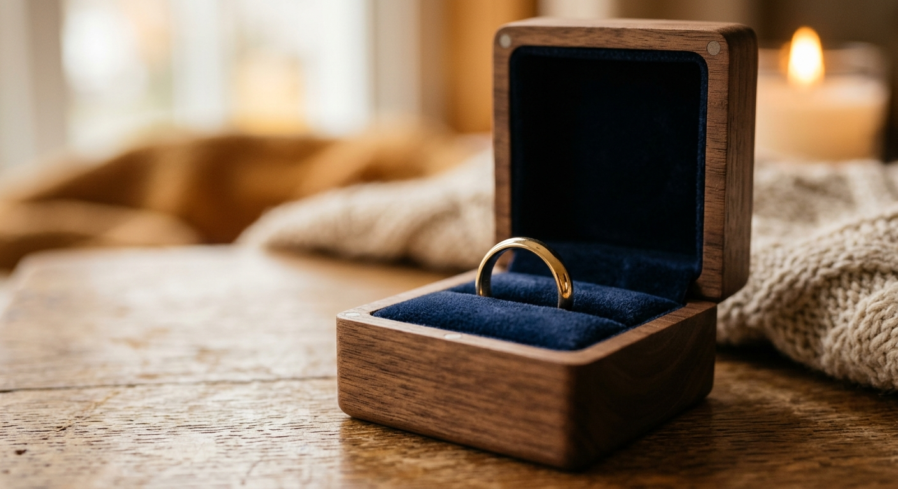
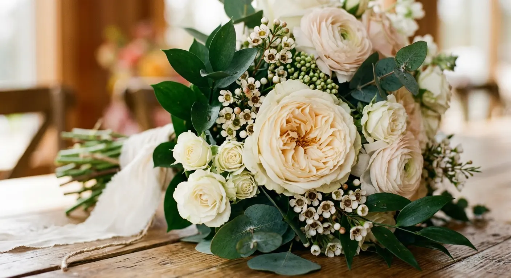

Fotografía Artística
Técnico superior en Imagen: paisaje, arquitectura, interiorismo, reportaje social, moda y bodegón publicitario. La base técnica de todo lo que hay en esta página.
EASD València · Escola d'Art i Superior de Disseny

Nací en Valencia y aprendí a mirar antes que a escribir. En la EASD de València cursé Fotografía Artística —paisaje, arquitectura, interiorismo, reportaje social, moda y bodegón publicitario— y aprendí a moldear la luz en lugar de sufrirla. Mi criterio bebe de Ansel Adams, Henri Cartier-Bresson y Richard Avedon: medida, instante y gesto. He firmado encargos de imagen para la ETSID de la UPV y reportajes de bodas; en cada serie busco una fotografía honesta, coherente y bien revelada, sin artificio.
Lo que aprendí en la EASD, aplicado: Paisaje, Robados, Visión personal, Bodegón publicitario, Moda y Retrato. Seis formas de mirar —la luz quieta del paisaje, el instante robado de la calle, la mirada propia, el objeto bien iluminado, el gesto de la prenda y el rostro sin artificio—, cada una en su sitio.
Del prado a la ciudad: luz quieta, atmósfera y encuadre medido. El paisaje como ejercicio de paciencia, donde el terreno revela su carácter.
Reportaje social en la estela de Cartier-Bresson: el instante decisivo. No se retrata a nadie, se sorprende el gesto verdadero antes de que se componga para la cámara.
Una mirada introspectiva que cuestiona lo establecido y abraza una visión generalista del mundo. Aquí la fotografía no documenta una realidad externa: compone, duda y relaciona, usando el encuadre como forma de pensar.
Composición, textura y luz dirigida para dar peso al objeto. El producto como protagonista: control del reflejo, del fondo y del punto de luz que lo hace deseable.
Dirección de imagen, gesto y luz al servicio de la prenda. El cuerpo en movimiento como línea compositiva: aire, ritmo y una historia contada con el encuadre.
Fondo limpio, tensión elegante y la mirada por delante del artificio: buscar a la persona, no la pose. Retrato como encuentro, medido en la luz y en el silencio.
Técnico superior en Imagen: paisaje, arquitectura, interiorismo, reportaje social, moda y bodegón publicitario. La base técnica de todo lo que hay en esta página.
EASD València · Escola d'Art i Superior de Disseny
 CIPFP Ciudad del Aprendiz
CFGS
CIPFP Ciudad del Aprendiz
CFGS
Color, preimpresión y maquetación. El origen de mi ojo para el encuadre, el tono y el detalle bien acabado.
CIPFP Ciudad del Aprendiz
Software que manejo a diario, con la suite Adobe como columna vertebral del flujo de imagen.
Tres ámbitos, un mismo criterio. Documentación fotográfica de instalaciones para la ETSID · UPV (exterior e interior), catálogo de producto industrial para Weidner Ibérica y Weidner México (bodegón técnico con control de reflejos sobre metal y plástico), y reportaje social de bodas, bautizos y comuniones. En cada encargo: plan de tomas, control de luz, revelado coherente serie a serie y entrega ordenada lista para publicar o imprimir.
Encargo de imagen para la ETSID, centro de la Universitat Politècnica de València.
upv.es →Tres encargos reales, contados por lo que resolvieron. Las cifras son métricas propias de cada entrega.
El centro necesitaba un banco de imágenes actualizado para web e informes, sin coherencia visual entre espacios.
Plan de tomas interior/exterior, control de luz ambiente y revelado uniforme serie a serie.
Banco institucional listo para publicar, con lenguaje de color homogéneo.
Producto técnico con materiales reflectantes y acabados difíciles, para dos empresas, sin pérdida de detalle.
Estudio con control de reflejos, iluminación dirigida y montaje coherente para impresión.
Catálogo listo para maquetar, con la misma norma de color para ambas.
Cubrir un día entero sin dirigir y sin perder el gesto verdadero entre protocolo y tiempos cerrados.
Cobertura continua, revelado coherente y selección cuidada en forma de serie narrativa.
Book cerrado con ritmo propio, listo para imprimir o publicar.
Fotografía de producto industrial para Weidner Ibérica y Weidner México: estudio y on-site, control de reflejos sobre metal y plástico e iluminación dirigida, para entregar una serie coherente lista para maquetación editorial.
Fabricante español de productos plásticos para la industria logística y de automoción, con central en Carlet (Valencia). Encargo de fotografía de producto industrial.
weidneriberica.com →Filial mexicana del Grupo Weidner. Fotografía de producto industrial y catálogo técnico para su línea de componentes.
weidner.mx →Fotografía de producto industrial. Catálogo técnico para Weidner Ibérica y Weidner México: fotografía de producto en entorno de estudio y on-site, con control de reflejos sobre metal y plástico, iluminación dirigida para resaltar materiales y acabados, y montaje coherente de la serie listo para maquetación editorial. Un encargo que une la precisión del bodegón publicitario con la documentación técnica de producto: habilidad y experiencia demostrable en foto de producto en el ámbito industrial.
Ver catálogo (PDF) →Reportaje social de encargo, tratado como una serie narrativa de principio a fin. Antes: reunión con la familia, plan de tomas y calendario (protocolo, tiempos, rincones y detalles). Durante: cobertura continua sin dirigir —la preparación, la ceremonia, el saludo, el convite y el baile—, atento al gesto verdadero y a los objetos que sostienen la historia. Después: revelado coherente, selección cuidada, maquetación del álbum y entrega lista para imprimir o publicar. Un book cerrado, con su propio ritmo.


Luz ambiente controlada, verticales corregidas y espacios que se ven como son.
Volúmenes, líneas y escala: leer el edificio antes de encuadrarlo.
Composición, textura y luz dirigida para dar peso al objeto.
Cobertura de eventos: el instante real, contado con criterio y sin ruido.
Dirección de imagen, gesto y luz de estudio al servicio de la prenda.
Tres maestros que enseñan a mirar. De ellos heredo el criterio, no la copia.
El blanco y negro como partitura: luz medida, textura y silencio.
 Cartier-Bresson
Cartier-Bresson
El instante decisivo: esperar, encuadrar y no disparar de más.
Retrato, fondo limpio y tensión elegante: la mirada, no el artificio.
Una ventana aleatoria a Unsplash vía Picsum: paisaje, retrato y bodegón para seguir mirando.